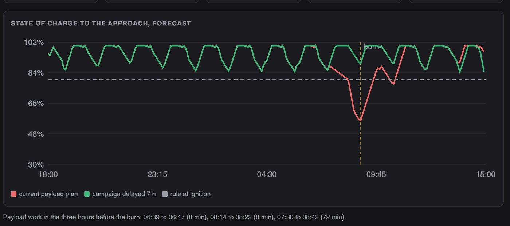
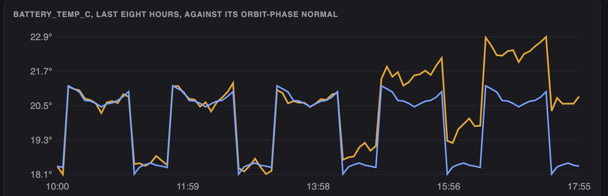
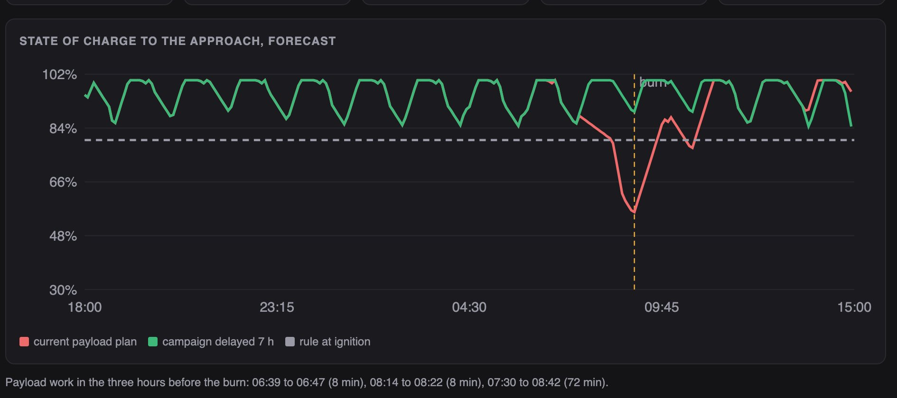
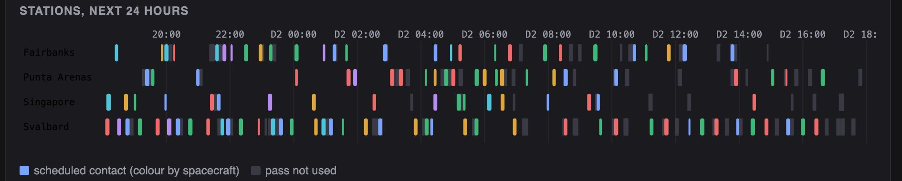

Python · Simulation · Space operations · 2026-10
One Battery Is Warming, Debris Is Coming, and Nothing Is Sent Without Two People
An operations system for a simulated 12-satellite fleet: it catches a slowly warming battery two hours after it starts (a fixed red limit takes ten), schedules ground-station passes so priority data lands first, scores a close approach, and refuses a manoeuvre the battery could not take until the payload plan is moved. Every command needs two different approvers.

Built from a written blueprint as one vertical slice. The fleet is simulated: orbits, passes, telemetry and the close approach come from a generator I wrote, which is what lets every alarm and plan be checked against the truth. Orbits are circles, not SGP4; the collision probability uses a stated uncertainty, not a covariance message. No language model is used. Not built: real TLEs, CCSDS packets, an actual uplink, a payload scheduler, Kafka, Terraform, single sign-on.
01 — The problem
A small operator flies a dozen satellites with four ground stations and a handful of people. A battery that warms half a degree an hour is a mission-ending fault in a week and invisible on a red-limit dashboard for most of a day. The passes cannot carry every downlink request. A screening message says debris is coming, and the fix, a manoeuvre, needs power the payload plan is about to spend. Can software notice early, plan the passes, show whether the manoeuvre is safe, and make sure no command leaves the ground on one person's say-so?
Blueprint 3 of fifteen in a third build book, built as its demo scenario end to end.
02 — What I built
A Python service on PostgreSQL with a background worker and a web page, started by one docker compose up.
- A simulator of the fleet: orbits, passes over four stations, sunlight and eclipse, a power balance and temperatures minute by minute, an injected fault, a close approach.
- Anomaly detection against each metric's normal by orbit phase, beside fixed red limits and an Isolation Forest.
- A contact planner (CP-SAT) over priorities, deadlines, antennas and slews.
- Conjunction scoring and a manoeuvre scenario with the battery margin it needs.
- A command queue with checksums, two different approvers, and a margin check at the gate.
03 — How it was built
- 01
A spacecraft's normal is a shape, not a number
Every housekeeping value swings with the orbit: warmer in sunlight, colder in eclipse, busier during a pass. A red limit sees none of that, so a fault has to grow past the whole swing before it trips. The detector learns each metric's normal as a curve over the orbit from the first twelve hours, folded on the spacecraft's own period, and measures how far today's value is from that curve in units of the usual noise.
bins = np.array([np.median(series[:learn][ph[:learn] == b]) for b in range(BINS)]) resid = series[:learn] - bins[ph[:learn]] - 02
Ninety-five false alarms, and what caused them
The first version folded on a fixed 95 minutes and reported any excursion since the learning window. On 36 clean spacecraft it raised 95 alarms. Each orbit's real period differs from 95 minutes by up to a minute, so after a day the fold was a quarter-orbit off and the sunlight swing itself looked wrong; and a payload burst drifting against the bins stayed on record forever. Folding on each spacecraft's own period and reporting only what is off its normal now brought the count to zero, with every injected drift still caught.
if not off[-PERSIST:].all(): continue - 03
Passes are the scarce thing
Twelve spacecraft want 486 GB; the next day's passes carry 544 GB before a single clash, and the sun-synchronous ones all reach Svalbard together. The planner is a constraint model: one interval per pass, no two contacts on an antenna at once (with a slew), no two for one spacecraft, nothing credited after a deadline, and the most priority-weighted data wins. It solves to optimality in a few hundredths of a second. First come, first served is kept beside it, and it completes more requests, because that is not what the planner was asked for.
for iv in list(per_st.values()) + list(per_sat.values()): m.AddNoOverlap(iv) - 04
Safe to fly means power, not just geometry
A 5 cm/s burn five hours out moves the spacecraft 2.7 km along its orbit and the collision probability falls from 2.8 in ten thousand to nothing. But a 72-minute imaging campaign sits just before the burn, and the battery forecast says 56% at ignition against an 80% rule. Moving the campaign past the approach gives 90%. The scenario shows both curves, and the command queue enforces the rule: a manoeuvre is refused while the payload plan stands.
if soc < world.SOC_BURN: raise Problem(409, "insufficient_margin", f"state of charge at ignition would be {soc:.0%}, below the {world.SOC_BURN:.0%} rule; delay the payload work first") - 05
Two people, and never the author
A command carries a checksum of its content. It needs two approvals from two different people, and the person who queued it cannot be one of them; the second approval releases it onto the next pass before its scheduled time. The demo shows the engineer trying to approve twice and the operator trying to approve at all, both refused, and the audit log holds every step with the checksum.
if ctx.actor_id in (cmd["created_by"], cmd["approved_by"]): raise Problem(409, "same_person", "the person who queued a command, or already approved it, cannot approve it again")
04 — Results
The demo. The battery temperature of RBO-07 over its last eight hours against its orbit-phase normal: the warming is plain from 16:00, two hours after the simulator started it; the red limit is still ten degrees away.

The battery forecast to the close approach under the current payload plan and with the campaign delayed:

The contact schedule for the next 24 hours, stations as rows:

On three other simulated fleets:
| System | Simple | |
|---|---|---|
| Drifts caught | 108 of 108 | 36 of 108 |
| Time to alarm | 2–3 h | 10–13 h |
| False alarms | 0 | 0 |
| Weighted GB | +9.6% | first come |
| Requests met | 11 | 18 |
"Simple" is a fixed red limit per metric for the alarms and first come, first served for the passes. The Isolation Forest the blueprint suggests caught none of the 108 drifts and raised 5 false alarms.
Honest limits. Detection waits for ten minutes at four noise units, so it takes two to three hours from onset. The planner maximises priority-weighted data and completes fewer requests than the simple rule; the objective decides. Orbits are circles and the collision probability has no covariance behind it. Everything runs on a simulator whose faults are straight ramps.
Checks. 14 tests, including: orbits stay circular and periodic, no two contacts share an antenna or a spacecraft, the clean spacecraft never alarm, a manoeuvre is refused without battery margin, the same person cannot approve twice, the author cannot approve, and one operator cannot see another's fleet.
05 — What I'd do next
- SGP4 on real public TLEs, to see how much of the pass planning survives real orbits.
- A payload scheduler that plans imaging around power and passes, instead of a fixed pattern plus one delay.
- Faults that are not ramps: steps, oscillations, sensor dropouts.